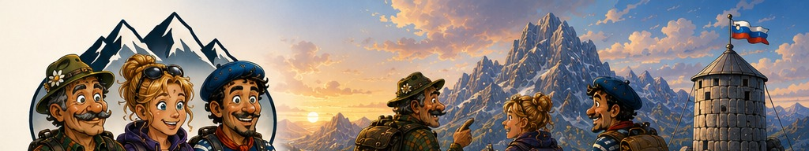
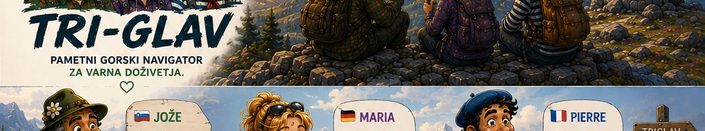
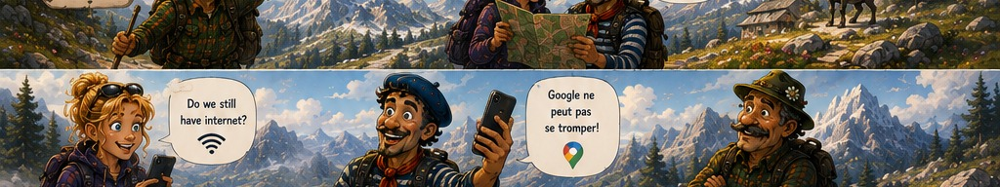
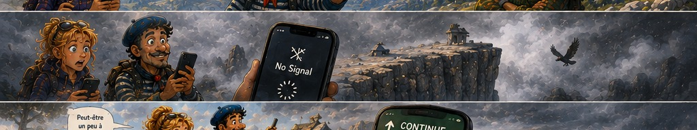
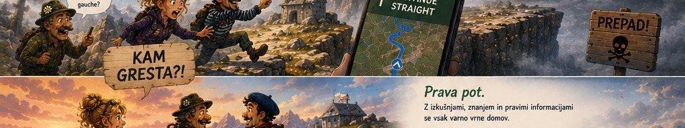
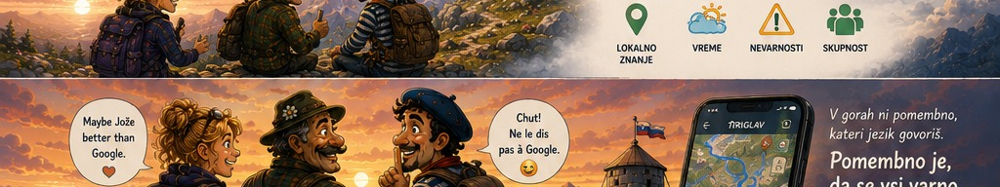
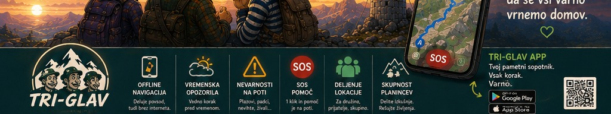

ZAKAJ TRI-GLAV?
Ker klasični zemljevidi in aplikacije niso dovolj. Potrebujemo več – skupnost, informacije in pravo pomoč.
VEČ INFORMACIJ →Lokalni pohodnik.
Pozna gore, poti
in njihove skrivnosti.

Jože se odpravi na pot.
Gore so njegov dom.
Pozna jih.
Spoštuje jih.
Popotnika iz tujine.
Polna navdušenja,
a brez poznavanja terena.

Maria in Pierre raziskujeta Julijske Alpe.
Zaupata običajni navigaciji.
A pot ju vodi tja,
kamor ne bi smela …
Pot ju pripelje na nevarno
mesto ob prepadu.
Signala ni.
Zaskrbljenost narašča.

Zgrešena pot.
Prepad pred njima.
Brez signala.
Brez pravih informacij.
Samo negotovost.
Pravočasno ju opazi.
Razume situacijo.
Ne okleva.

Jože ju opazi.
Razume nevarnost.
Odloči se pomagati.
Kljub različnim jezikom
najdejo način za
sporazumevanje.

Z rokami, s prevajalnikom,
z nasmehom.
Različni jeziki,
isto razumevanje.
Skupaj nadaljujejo pot
proti vrhu.
Varnost. Zaupanje.
Povezanost.

Skupaj do vrha.
Ne kot tujci,
ampak kot prijatelji.
Na vrhu nastane ideja,
ki lahko pomaga
tisočem ljudem.

Tukaj, na vrhu Triglava,
se rodi ideja TRI-GLAV.
Več kot zemljevid.
Varnostni ekosistem.
Skupnost, tehnologija,
človečnost.
Ker klasični zemljevidi in aplikacije niso dovolj. Potrebujemo več – skupnost, informacije in pravo pomoč.
VEČ INFORMACIJ →Informacije, prijava težav, SOS pomoč, skupnost in preverjeni lokalni viri – vse na enem mestu.
VEČ INFORMACIJ →Začenjamo doma. Testiramo. Učimo se. Rastemo skupaj.
VEČ INFORMACIJ →Za popoln ekosistem iščemo še dve ključni »glavi«. Pridruži se ustvarjanju prihodnosti.
VEČ INFORMACIJ →TRI-GLAV nastaja s srcem in prostovoljstvom. Tvoja podpora nam pomaga razvijati tehnologijo, testirati rešitve in širiti varnost med ljudi.
PODPRI Z DONACIJO